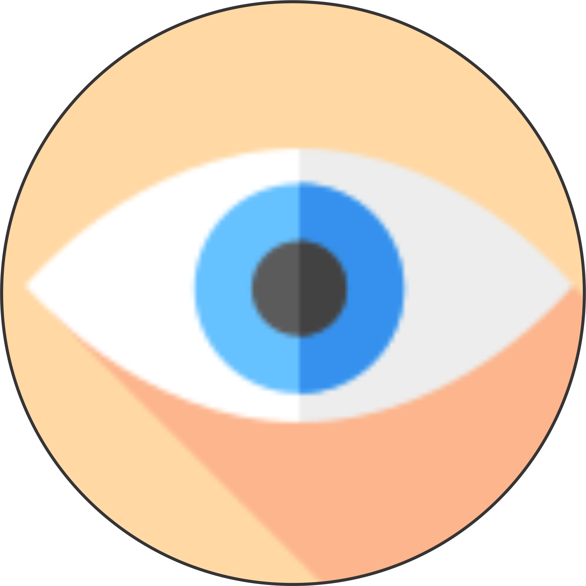

SIGHT
Sight or vision is the capability of the eyes to focus and detect images of visible light and generate electrical nerveimpulses for varying colors, hues, and brightness. Visual perception is how the brain processes these impulses – recognising, differentiating and interpreting visual stimuli through comparison with experiences made earlier in life.
